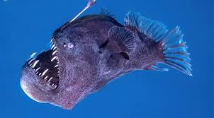
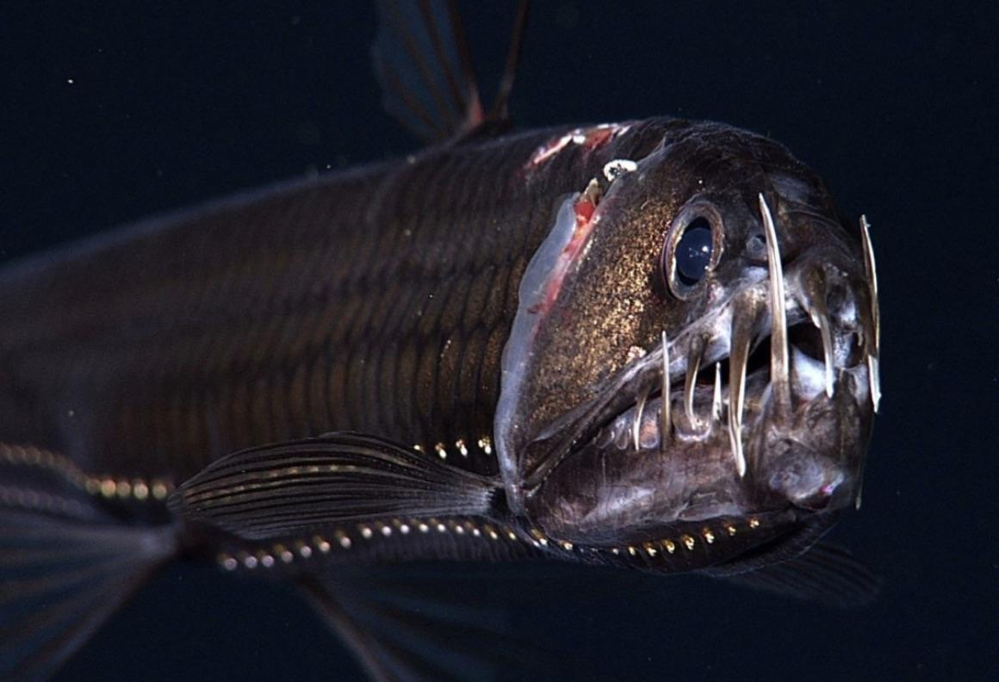
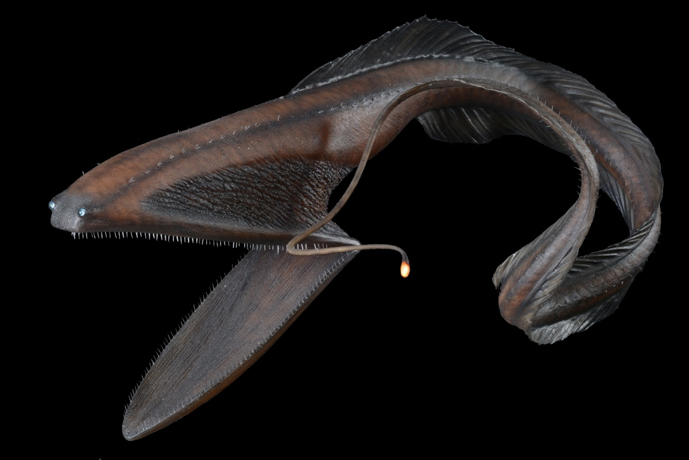
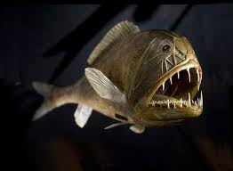
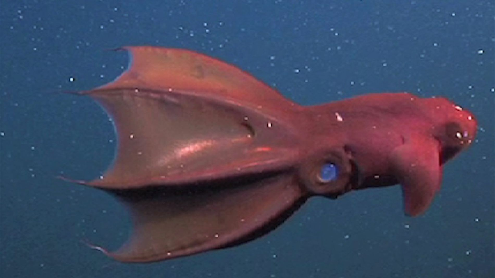
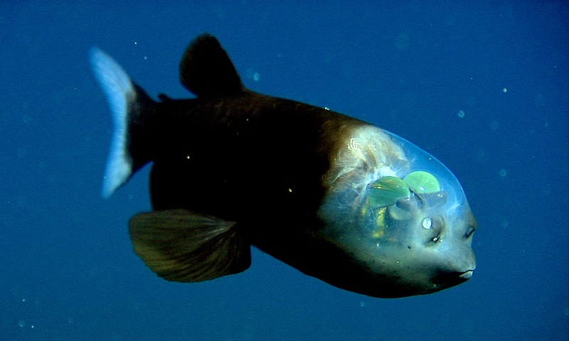
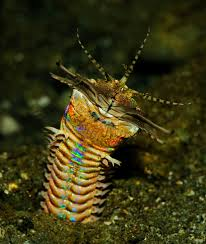
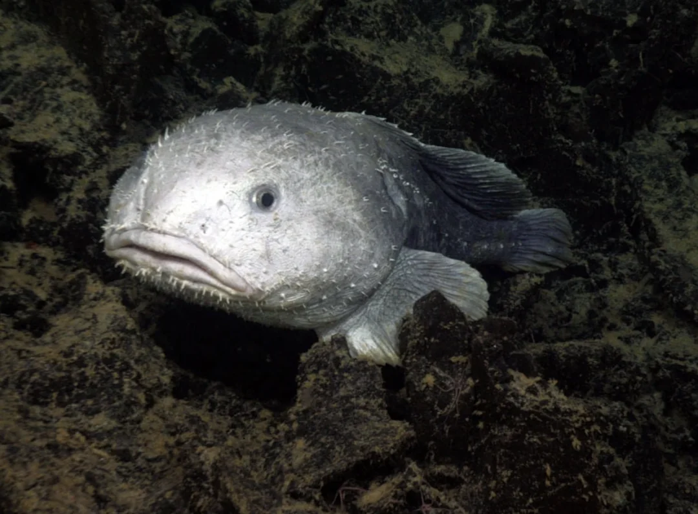
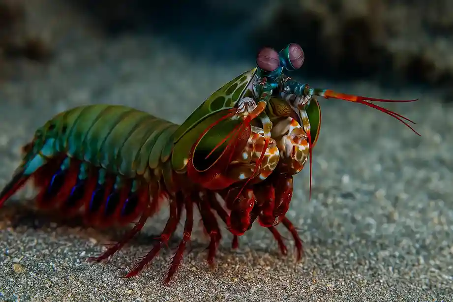
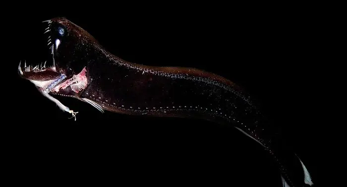

Top 10 Criaturas Mais Bizarras das Profundezas
1. Peixe-diabo-negro (Melanocetus johnsonii)
Pequeno, mas assustador, esse peixe possui uma enorme boca cheia de dentes pontiagudos e uma antena luminosa para atrair suas presas no breu total.
Curiosidade: As fêmeas podem chegar a 20 vezes o tamanho dos machos, que vivem grudados nelas como parasitas.
2. Peixe-víbora (Chauliodus sloani)
Dono dos maiores dentes proporcionais ao corpo no mundo animal, o peixe-víbora parece uma criatura saída de um pesadelo.
Curiosidade: Seus dentes são tão grandes que ele precisa abrir espaço em seu próprio crânio para fechá-los.
3. Enguia-pelicana (Eurypharynx pelecanoides)
Boca gigantesca em formato de bolsa, que permite engolir presas maiores do que seu próprio corpo.
Curiosidade: Apesar do nome, não é uma enguia verdadeira — é um peixe único no seu grupo.
4. Peixe-ogro (Anoplogaster cornuta)
Pequeno, mas com dentes enormes e aparência feroz, é conhecido por atacar qualquer coisa que se mova.
Curiosidade: Mesmo com cara de vilão, mede apenas cerca de 15 cm.
5. Lula-vampira (Vampyroteuthis infernalis)
Apesar do nome assustador, é uma criatura pacífica. Tem olhos brilhantes e membranas que parecem capas quando se enrola.
Curiosidade: Seu nome significa literalmente "lula vampira do inferno".
6. Peixe-fantasma (Macrouridae)
Corpo alongado, pele sem escamas e olhos enormes, adaptados para enxergar nas maiores profundezas.
Curiosidade: É chamado de fantasma porque sua pele sem pigmento parece transparente nas águas escuras.
7. Verme Bobbit (Eunice aphroditois)
Um verme que se esconde na areia e captura suas presas com uma mordida tão rápida que pode partir um peixe ao meio.
Curiosidade: Pode chegar a 3 metros de comprimento!
8. Peixe-gota (Psychrolutes marcidus)
Famoso por sua aparência de "rosto derretido" fora d’água, é na verdade bem adaptado para viver sob altíssima pressão.
Curiosidade: Foi eleito "o animal mais feio do mundo" em 2013.
9. Camarão-mantis (Odontodactylus scyllarus)
Dono de uma das pancadas mais rápidas e fortes do reino animal — seu soco pode quebrar vidro de aquários.
Curiosidade: Seus olhos são tão avançados que enxergam cores que nós sequer podemos imaginar.
10. Dragão-negro (Idiacanthus atlanticus)
Corpo longo e fino, com dentes enormes e uma luz na ponta de uma extensão da mandíbula para atrair presas.
Curiosidade: As fêmeas são assustadoras, enquanto os machos são minúsculos, sem dentes e sequer possuem sistema digestivo.